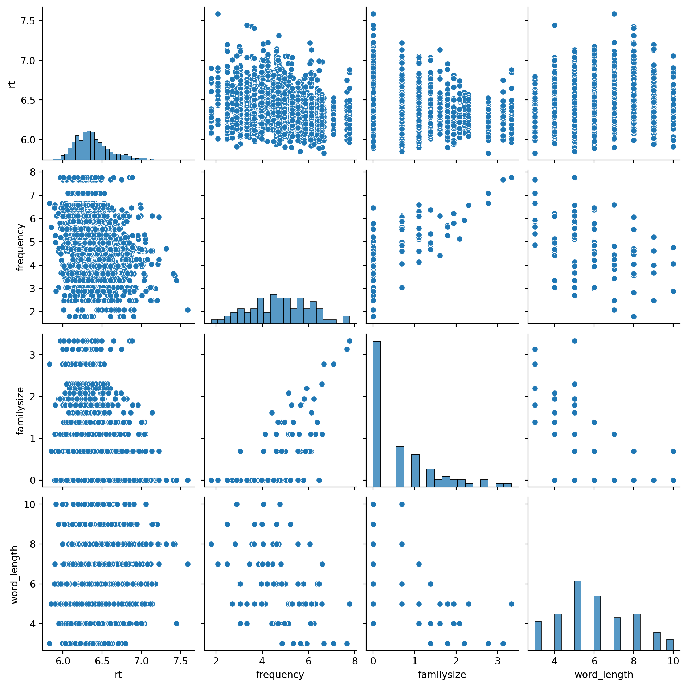
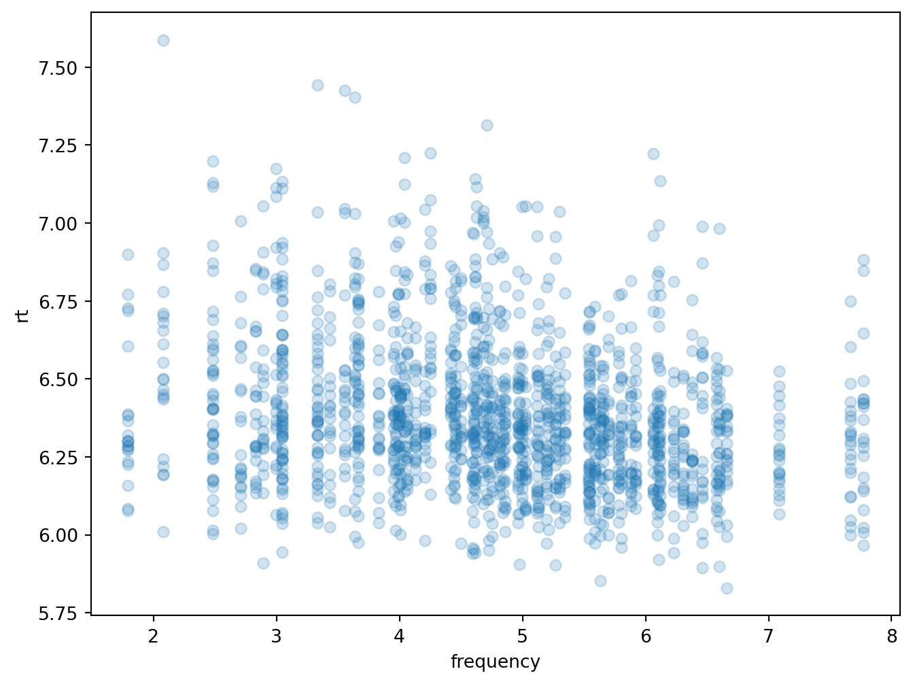
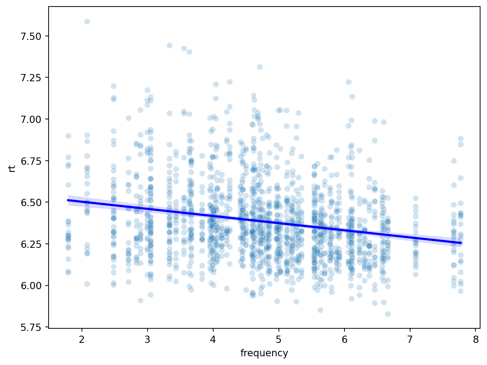
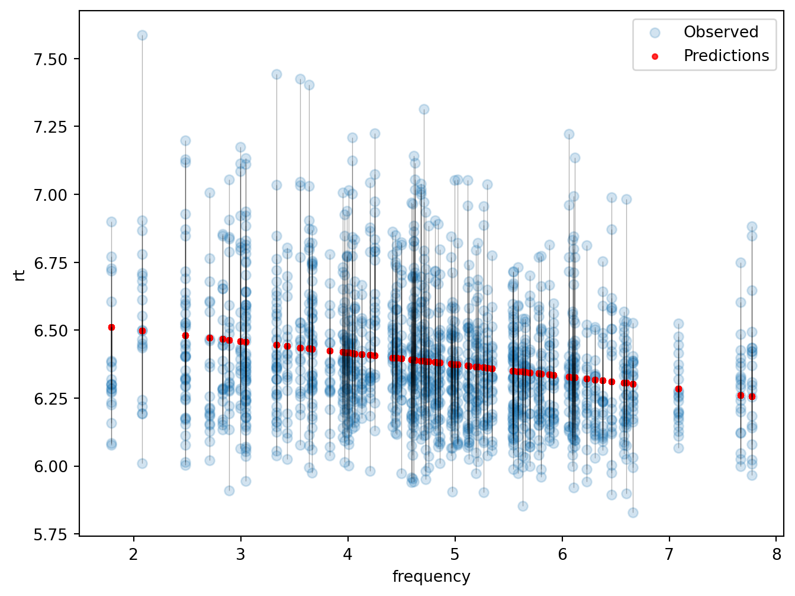
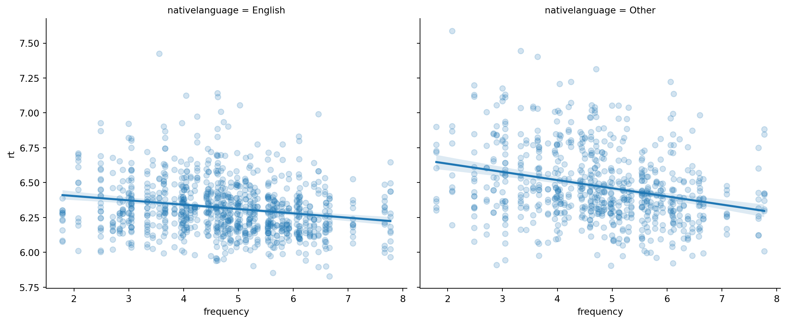
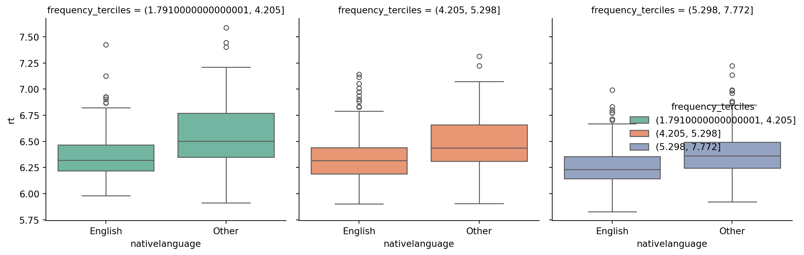

import pandas as pd
import numpy as np
import seaborn as sns
import matplotlib.pyplot as plt
import statsmodels.formula.api as smfLinear Regression Lab
Note: I tried to adapt most of the code from R to python, but the questions and plots should be mostly the same! I think I was able to reproduce it in python, but if there’s some formatting issues then lmk!
Setup: the data
The data for this lab come from a lexical decision experiment (Baayen et al. 2006). Twenty-one participants saw 79 words – the names of animals and plants – and decided as quickly as possible whether each was a real word. We recorded their reaction times (log-transformed, in the RT column).
The reaction times are stored in lexdec_wide.csv in wide format (one column per word). Word-level properties – frequency, morphological family size, length, and class – live in wordinfo.csv. The chunk below reshapes the reaction times into long format and joins in the word properties, giving us a single tidy data frame. (You don’t need to change anything here – just run it.)
base_url = (
"https://raw.githubusercontent.com/SocialInteractionLab/"
"LINGUIST245B/refs/heads/master/assets/data/"
)
df_lexdec_wide = pd.read_csv(base_url + "lexdec_wide.csv")
df_wordinfo = pd.read_csv(base_url + "wordinfo.csv")
df_lexdec = (
df_lexdec_wide
.melt(
id_vars=["Subject", "Sex", "NativeLanguage"],
var_name="Word",
value_name="RT"
)
.merge(df_wordinfo, on="Word", how="left")
.rename(columns=lambda x: x.lower().replace(" ", "_"))
.rename(columns={"length": "word_length"})
)
df_lexdec.head()| subject | sex | nativelanguage | word | rt | frequency | familysize | word_length | class | |
|---|---|---|---|---|---|---|---|---|---|
| 0 | A1 | F | English | almond | 6.184149 | 4.204693 | 0.0 | 6 | plant |
| 1 | A2 | M | English | almond | 6.315358 | 4.204693 | 0.0 | 6 | plant |
| 2 | A3 | F | Other | almond | 7.044033 | 4.204693 | 0.0 | 6 | plant |
| 3 | C | F | English | almond | 6.440947 | 4.204693 | 0.0 | 6 | plant |
| 4 | D | M | Other | almond | 6.415097 | 4.204693 | 0.0 | 6 | plant |
I. Simple linear regression and prediction
1. Explore the data
The plot below shows all pairwise relationships among the numeric variables. (You don’t need to change this chunk.)
sns.pairplot(df_lexdec[['rt', 'frequency', 'familysize', 'word_length']])
plt.show()
Looking at the plot, briefly describe one relationship that stands out to you.
YOUR ANSWER HERE: Looking at the scatterplot between rt and familysize, I could see the dots following somewhat of a trajectory that is a linear pattern. At family size 0 there is some overcrowding of points in a vertical line but the rest follow a linear trend.
2. Fit and interpret a simple regression
You want to test the relationship between a word’s frequency (frequency) and how quickly people recognize it (rt).
a) Make a scatterplot of rt (y-axis) against frequency (x-axis) with point transparency 0.2, and save it to an object called plot.rt_frequency. The last line of the chunk displays it.
plot_rt_frequency, ax = plt.subplots(figsize=(8, 6))
ax.scatter(df_lexdec['frequency'], df_lexdec['rt'], alpha=0.2)
ax.set_xlabel('frequency')
ax.set_ylabel('rt')
plt.show()
b) Fit a linear regression predicting rt from frequency, and look at the model summary.
model = smf.ols('rt ~ frequency', data=df_lexdec).fit()
print(model.summary())
fig, ax = plt.subplots(figsize=(8, 6))
sns.scatterplot(data=df_lexdec, x='frequency', y='rt', alpha=0.2, ax=ax)
sns.regplot(data=df_lexdec, x='frequency', y='rt',
scatter=False, color='blue', ax=ax)
plt.show() OLS Regression Results
==============================================================================
Dep. Variable: rt R-squared: 0.051
Model: OLS Adj. R-squared: 0.051
Method: Least Squares F-statistic: 89.47
Date: Fri, 15 May 2026 Prob (F-statistic): 1.03e-20
Time: 22:16:40 Log-Likelihood: 47.289
No. Observations: 1659 AIC: -90.58
Df Residuals: 1657 BIC: -79.75
Df Model: 1
Covariance Type: nonrobust
==============================================================================
coef std err t P>|t| [0.025 0.975]
------------------------------------------------------------------------------
Intercept 6.5888 0.022 295.515 0.000 6.545 6.633
frequency -0.0429 0.005 -9.459 0.000 -0.052 -0.034
==============================================================================
Omnibus: 222.224 Durbin-Watson: 1.731
Prob(Omnibus): 0.000 Jarque-Bera (JB): 348.635
Skew: 0.921 Prob(JB): 1.97e-76
Kurtosis: 4.286 Cond. No. 19.7
==============================================================================
Notes:
[1] Standard Errors assume that the covariance matrix of the errors is correctly specified.
c) Is frequency a significant predictor of reaction time? What is the r-squared value, and what does it tell you about the model?
YOUR ANSWER HERE: Yes, frequency is a significant predictor here with p-values less than 0.001. The r2 value is 0.051 and this means there is somewhat of a positive linear relationship which is significant.
3. Prediction and model fit
a) Use your model to predict rt for every row, storing the result in a new predictions column of df.lexdec.
Hint: take a look at the
predict()function.
df_lexdec['predictions'] = model.predict(df_lexdec)The chunk below overlays those predictions (red) on the observed data, with black segments showing the residuals – the gap between each observed and predicted value. (You don’t need to change this chunk.)
fig, ax = plt.subplots(figsize=(8, 6))
# Original scatter plot
ax.scatter(df_lexdec['frequency'], df_lexdec['rt'], alpha=0.2, label='Observed')
# Add residual segments as vertical lines
ax.vlines(
x=df_lexdec['frequency'],
ymin=df_lexdec[['rt', 'predictions']].min(axis=1),
ymax=df_lexdec[['rt', 'predictions']].max(axis=1),
color='black',
alpha=0.3,
linewidth=0.5
)
# Add predictions (red points)
ax.scatter(df_lexdec['frequency'], df_lexdec['predictions'],
color='red', alpha=0.8, s=10, label='Predictions')
ax.set_xlabel('frequency')
ax.set_ylabel('rt')
ax.legend()
plt.show()
Squaring and summing those residuals gives the residual sum of squares; comparing it to the total sum of squares gives r-squared. The function below computes it (you don’t need to change it):
def r_squared(Y_true, Y_pred):
ss_residual = np.sum((Y_true - Y_pred)**2)
ss_total = np.sum((Y_true - np.mean(Y_true))**2)
return 1 - ss_residual / ss_totalb) Use r_squared() to compute r-squared for your predictions, and confirm it matches the value reported by summary() in 2b.
### CODE HERE
r2 = r_squared(df_lexdec['rt'], df_lexdec['predictions'])
print(f"R-squared: {r2}")R-squared: 0.05122788018895541c) In theory, what are the minimum and maximum values r-squared can take on training data with a linear regression, and why? What does an r-squared of 0 mean?
YOUR ANSWER HERE: The range of r2 values can be from 0 to 1 depending on the strength of the correlation i.e. how well our predictions fit the data based on sum of squares of residuals. An r2 value of 0 means there is no linear relationship between the data and the predictions because the sum of squares of residuals equals the sum of squares between the data and the mean.
II. Controlling for a confound
In psycholinguistics, as in much of psychology, people often run regressions to assess the relationship between two variables while “controlling” for others. But which variables we control for is a substantive decision. Here we’ll see what controlling for a variable can do.
A word’s morphological family size (family_size) is the number of morphologically related words – derived forms and compounds – it belongs to (log-transformed).
4. Family size, with and without frequency
a) Fit a simple linear regression predicting rt from family_size and look at the summary. Is family size a significant predictor of reaction time? Briefly, what do the intercept and slope mean?
model_family = smf.ols('rt ~ familysize', data=df_lexdec).fit()
print(model_family.summary()) OLS Regression Results
==============================================================================
Dep. Variable: rt R-squared: 0.035
Model: OLS Adj. R-squared: 0.035
Method: Least Squares F-statistic: 60.90
Date: Fri, 15 May 2026 Prob (F-statistic): 1.06e-14
Time: 22:16:41 Log-Likelihood: 33.607
No. Observations: 1659 AIC: -63.21
Df Residuals: 1657 BIC: -52.39
Df Model: 1
Covariance Type: nonrobust
==============================================================================
coef std err t P>|t| [0.025 0.975]
------------------------------------------------------------------------------
Intercept 6.4218 0.007 857.823 0.000 6.407 6.436
familysize -0.0522 0.007 -7.804 0.000 -0.065 -0.039
==============================================================================
Omnibus: 225.988 Durbin-Watson: 1.710
Prob(Omnibus): 0.000 Jarque-Bera (JB): 355.641
Skew: 0.933 Prob(JB): 5.94e-78
Kurtosis: 4.291 Cond. No. 2.11
==============================================================================
Notes:
[1] Standard Errors assume that the covariance matrix of the errors is correctly specified.YOUR ANSWER HERE: Yes, the results show that it is a significant relationship. The slope is -0.0522 which means that for every one unit increase in family size, the reaction time decreases by 0.0522 units (ms). The intercept is 6.4218 which means that when family size is 0, the reaction time is 6.4218 on average.
Morphological family size is strongly correlated with word frequency – words with big families also tend to be high-frequency – and frequency is itself a powerful predictor of recognition speed.
b) Now fit a regression predicting rt from BOTH family_size and frequency. Is family size still a significant predictor? What could explain the change, if there is one?
model_both = smf.ols('rt ~ familysize + frequency', data=df_lexdec).fit()
print(model_both.summary()) OLS Regression Results
==============================================================================
Dep. Variable: rt R-squared: 0.053
Model: OLS Adj. R-squared: 0.052
Method: Least Squares F-statistic: 46.17
Date: Fri, 15 May 2026 Prob (F-statistic): 3.06e-20
Time: 22:16:41 Log-Likelihood: 48.683
No. Observations: 1659 AIC: -91.37
Df Residuals: 1656 BIC: -75.12
Df Model: 2
Covariance Type: nonrobust
==============================================================================
coef std err t P>|t| [0.025 0.975]
------------------------------------------------------------------------------
Intercept 6.5639 0.027 244.685 0.000 6.511 6.616
familysize -0.0157 0.009 -1.669 0.095 -0.034 0.003
frequency -0.0353 0.006 -5.511 0.000 -0.048 -0.023
==============================================================================
Omnibus: 219.679 Durbin-Watson: 1.734
Prob(Omnibus): 0.000 Jarque-Bera (JB): 342.490
Skew: 0.915 Prob(JB): 4.26e-75
Kurtosis: 4.268 Cond. No. 24.7
==============================================================================
Notes:
[1] Standard Errors assume that the covariance matrix of the errors is correctly specified.YOUR ANSWER HERE: The family size variable is no longer significant here with p-values much greater now (>0.05). This means that the relationship between family size and reaction time is not significant when we control for frequency. The previous effects could be due to the fact that frequency and family size are strongly correlated with each other and not individually significant.
III. Interactions
So far we’ve treated the frequency effect as if it were the same for every reader. But the speed-up that frequency buys might depend on who is reading. In this section we’ll ask whether the effect of frequency on rt is moderated by a participant’s language background (native_language: English vs. Other).
5. Visualize the interaction
Make a scatterplot of rt against frequency, add a linear regression line, and facet by native_language.
Hint:
geom_smooth(method = "lm")andfacet_wrap().
g = sns.lmplot(
data=df_lexdec,
x='frequency',
y='rt',
col='nativelanguage',
scatter_kws={'alpha': 0.2},
height=5,
aspect=1.2
)
plt.show()
Another way to see the same thing is to chop frequency into thirds (terciles) and compare language groups within each. The chunk below builds the terciles and plots them (you don’t need to change it):
def cut_terciles(x):
return pd.cut(
x,
bins=x.quantile([0, 1/3, 2/3, 1]),
include_lowest=True
)
# Add frequency_terciles column
df_lexdec['frequency_terciles'] = cut_terciles(df_lexdec['frequency'])
g = sns.catplot(
data=df_lexdec,
x='nativelanguage',
y='rt',
hue='frequency_terciles',
col='frequency_terciles',
kind='box',
height=4,
aspect=0.8,
palette='Set2'
)
plt.tight_layout()
plt.show()
6. Test the interaction
Fit two linear models with rt as the outcome: one with frequency and native_language but no interaction, and one that adds their interaction. Compare the two models with anova().
from statsmodels.stats.anova import anova_lm
model_no_interaction = smf.ols('rt ~ frequency + nativelanguage', data=df_lexdec).fit()
model_with_interaction = smf.ols('rt ~ frequency * nativelanguage', data=df_lexdec).fit()
anova_results = anova_lm(model_no_interaction, model_with_interaction)
print(anova_results) df_resid ssr df_diff ss_diff F Pr(>F)
0 1656.0 81.886834 0.0 NaN NaN NaN
1 1655.0 81.388664 1.0 0.498171 10.130067 0.001486Is the interaction term doing real work? How does that match what you saw in the plots in Problem 5?
YOUR ANSWER HERE: The interaction term seems important here as the anova comparison gave us significant results. From the plots, we could see different slopes (visually) and the box plots had gaps which changed in magnitude across levels.
7. Interpret the interaction
native_language is already binary, so we can make an explicit 0/1 dummy variable: 0 for native English speakers, 1 otherwise. The chunk below builds it and fits the interaction model (you don’t need to change it):
df_lexdec['nonnative'] = (df_lexdec['nativelanguage'] == 'Other').astype(int)
interaction_model = smf.ols('rt ~ frequency + nonnative + nonnative:frequency',
data=df_lexdec).fit()
print(interaction_model.summary()) OLS Regression Results
==============================================================================
Dep. Variable: rt R-squared: 0.158
Model: OLS Adj. R-squared: 0.157
Method: Least Squares F-statistic: 103.8
Date: Fri, 15 May 2026 Prob (F-statistic): 1.39e-61
Time: 22:16:41 Log-Likelihood: 146.70
No. Observations: 1659 AIC: -285.4
Df Residuals: 1655 BIC: -263.8
Df Model: 3
Covariance Type: nonrobust
=======================================================================================
coef std err t P>|t| [0.025 0.975]
---------------------------------------------------------------------------------------
Intercept 6.4661 0.028 232.626 0.000 6.412 6.521
frequency -0.0311 0.006 -5.504 0.000 -0.042 -0.020
nonnative 0.2863 0.042 6.744 0.000 0.203 0.370
nonnative:frequency -0.0275 0.009 -3.183 0.001 -0.044 -0.011
==============================================================================
Omnibus: 185.853 Durbin-Watson: 1.535
Prob(Omnibus): 0.000 Jarque-Bera (JB): 292.502
Skew: 0.789 Prob(JB): 3.05e-64
Kurtosis: 4.319 Cond. No. 49.0
==============================================================================
Notes:
[1] Standard Errors assume that the covariance matrix of the errors is correctly specified.The model is:
\[rt_i = \beta_0 + \beta_1 \cdot frequency_i + \beta_2 \cdot nonnative_i + \beta_3 \cdot (nonnative_i \cdot frequency_i) + \epsilon_i\]
a) What does each of \(\beta_0\), \(\beta_1\), \(\beta_2\), and \(\beta_3\) mean substantively – in terms of frequency, reaction time, and language background?
YOUR ANSWER HERE: \(\beta_0\) the intercept predicts rt when frequency and non-native are both 0, \(\beta_1\) is the slope of the frequency variable, \(\beta_2\) is the slope of the language background variable, and \(\beta_3\) is the slope of the interaction term to tell us how much the frequency differs between language backgrounds. Each of these slopes tell us how much rt changes for a one unit change in the respective variable when the other variables are held constant.
b) Based on the summary, is there evidence of moderation – does the frequency effect differ by language background? Which coefficient tells you, and which direction does it go?
YOUR ANSWER HERE: We can see moderation here and frequency effects are different for the different language backgrounds. The interaction coefficient (-0.0275) is significant and is negative meaning that the frequency effect is more negative (higher in magnitude) for non-native speakers (encoded with 1).
A note on independence
Throughout this lab we have fit ordinary linear models with lm(), which assume that every row of the data is an independent observation. That assumption is not met here: each of our 21 participants contributed a response to all 79 words, so the rows are clustered both by participant and by word. Next week we will see how mixed-effects models (lmer) let us model that structure directly, instead of pretending it isn’t there.
Session info
sessionInfo()